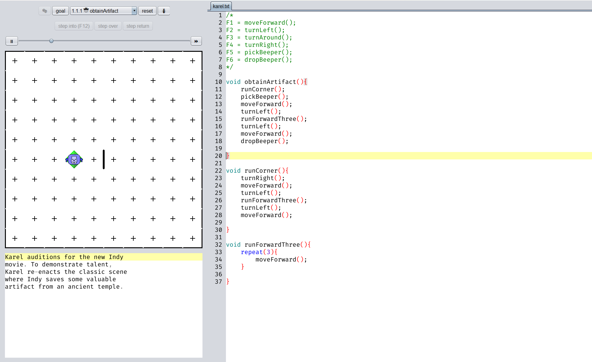

obtainArtifact

Hier habe ich die Methode "runCorner" definiert, weil ich dachte, ich könnte
damit zum Beeper laufen und wieder zurück, aber der Rückweg ist ja eine andere
Richtung, deswegen musste ich da umdisponieren und habe die Befehle beim zweiten
einfach von Hand eingegeben. runForwardThree ist eine repeat-Methode, mit der ich
mit wenig Code drei Felder vorwärts laufen kann.